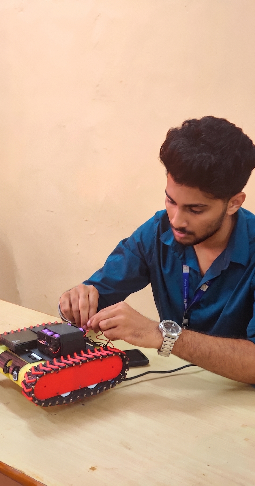
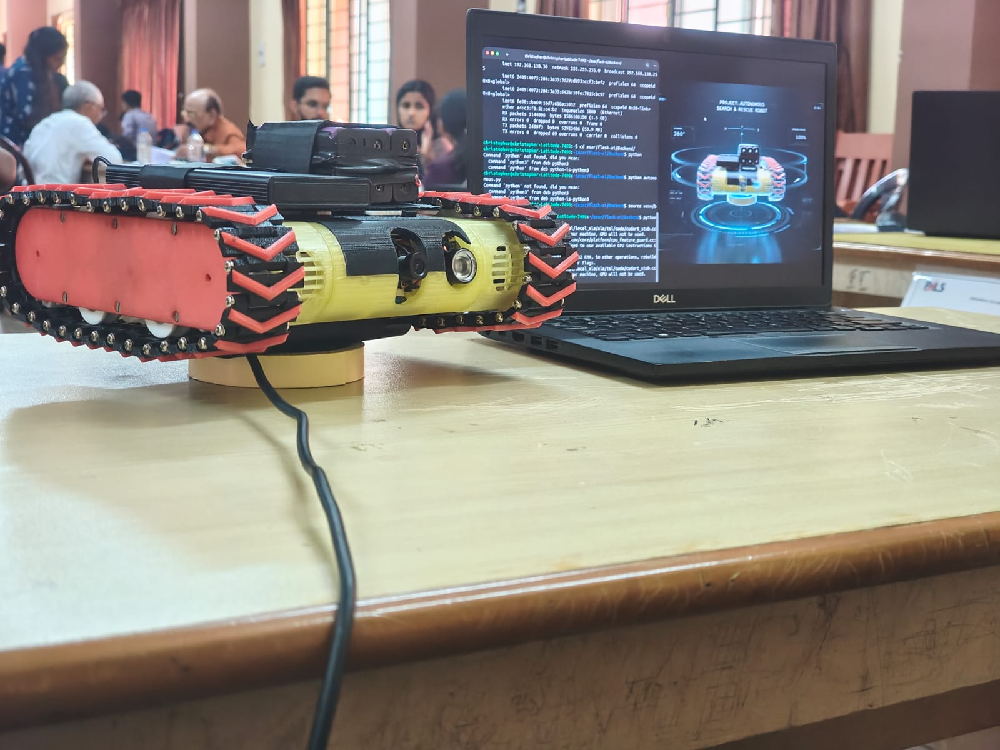
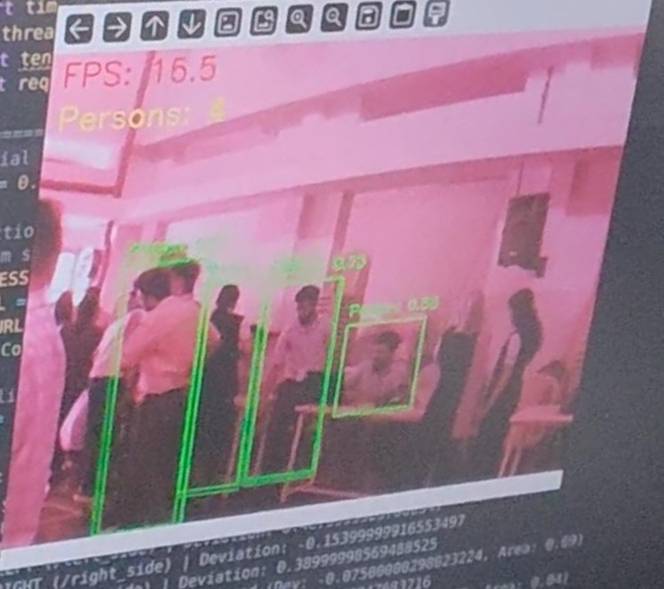
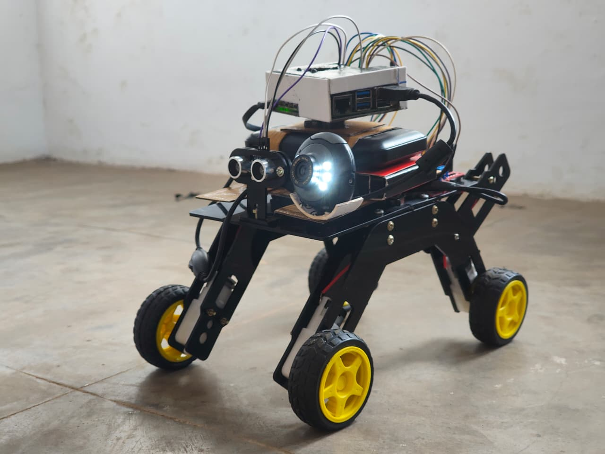
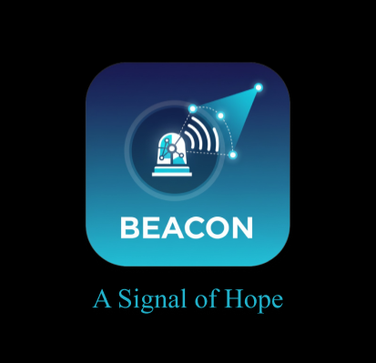
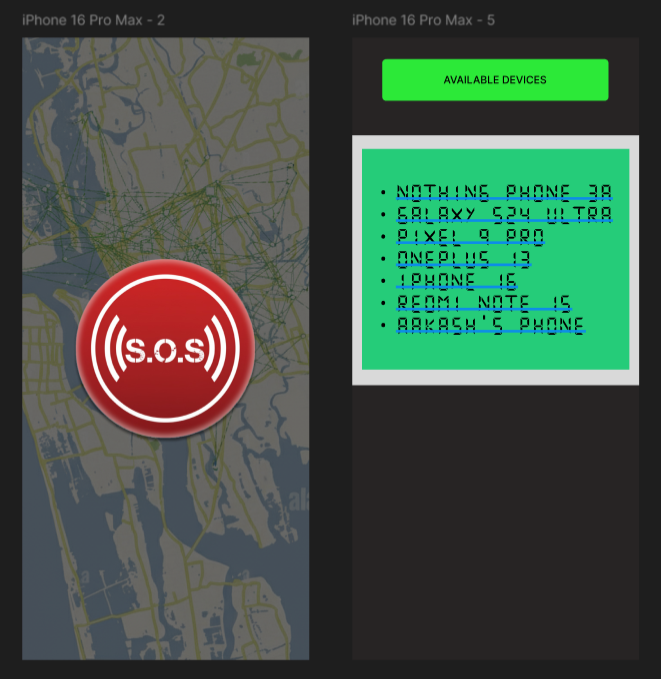
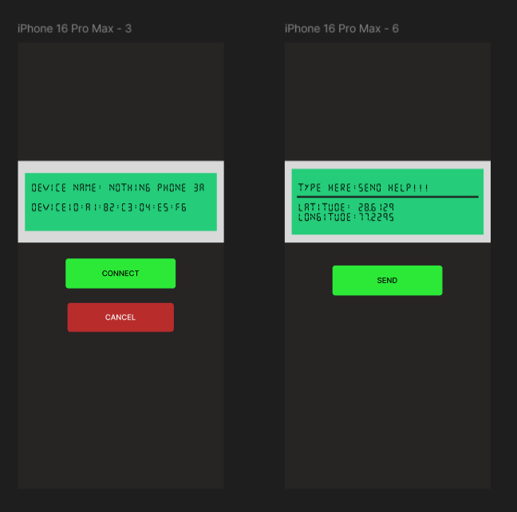

Passionate about building intelligent robotic systems, embedded AI solutions, and resilient disaster-response technologies that bridge software intelligence with real-world hardware deployment.

Role: Software Architecture & Hardware Integration
The Goal: Build the "brain" for a mobile disaster-relief rover capable of identifying and tracking individuals in hazardous zones.
The Software-to-Hardware Bridge: Engineered the integration logic directly on the Raspberry Pi. The onboard AI processes the camera feed to detect humans, and the Python scripts instantly translate that spatial data into physical motor control for autonomous navigation—entirely without a secondary microcontroller.


The goal of this project was to develop a dynamic, autonomous indoor patrolling system capable of operating in unpredictable environments.
Visual Processing: Engineered the software architecture to process optical sensor feeds in real-time, executing continuous facial recognition and human tracking within its operational area.
Dynamic Avoidance: Translated software-based spatial detection algorithms into instantaneous physical motor responses, allowing the robot to autonomously avoid obstacles while navigating unpredictable indoor environments.



Role: UI/UX Design & Network Logic
The Goal: Ensure emergency communication during complete network outages using decentralized technology.
Mesh Networking: Optimized BLE device discovery algorithms to rapidly form a peer-to-peer mesh network between devices.
User Experience: Designed the frontend interface to be highly intuitive during high-stress disaster scenarios, proving my ability to bridge complex backend communication protocols with accessible user design.
Raspberry Pi, TensorFlow, OpenCV - building intelligent autonomous systems for real-world deployment.
Python, Flutter, Dart - from backend logic to polished frontend interfaces.
Bluetooth Low Energy, mesh networking, hardware-software integration on embedded platforms.
Human-centered design for high-stress environments, bridging complex protocols with intuitive interfaces.